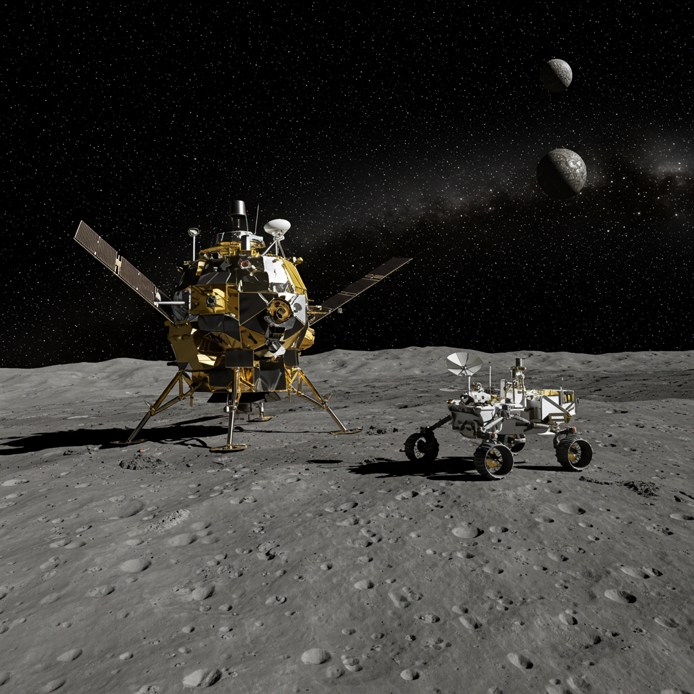

Sonda Hayabusa 1
Agencia: JAXA (Agencia Japonesa de Exploración Aeroespacial)
Fecha de lanzamiento: 9 de mayo de 2003
Tipo de misión: Misión de retorno de muestras de asteroide
Instrumentación
Hayabusa 1 estaba equipada con varios instrumentos para estudiar el asteroide Itokawa y recolectar muestras:
- Cámaras ópticas para navegación y observación de la superficie.
- Láser altímetro (LIDAR) para mediciones de distancia y topografía.
- Espectrómetro de rayos X y de infrarrojos cercanos para análisis de composición.
- Dispositivo de muestreo de impacto (Sampler Horn) para recoger partículas de la superficie.
- MINERVA (MIcro/Nano Experimental Robot Vehicle for Asteroid): un pequeño rover experimental.
Actividades Notables
La misión Hayabusa 1 fue pionera y enfrentó numerosos desafíos:
- Llegó al asteroide Itokawa en septiembre de 2005.
- Realizó observaciones detalladas de la superficie del asteroide.
- Intentó la recolección de muestras mediante un "toque y vuela" en la superficie del asteroide. Aunque el mecanismo de disparo del proyectil no funcionó como se esperaba, se cree que se recogió polvo de la superficie.
- Desplegó con éxito el pequeño rover MINERVA (aunque su operación fue limitada).
- Realizó el viaje de retorno a la Tierra con la cápsula de muestras.
Impacto Histórico y Descubrimientos
Hayabusa 1 hizo historia al ser la primera misión en:
- Aterrizar y despegar de la superficie de un asteroide.
- Regresar muestras de un asteroide a la Tierra.
- Proporcionó datos cruciales sobre la geología y composición del asteroide tipo S Itokawa.
- Demostró la viabilidad de misiones de retorno de muestras complejas desde cuerpos pequeños del sistema solar.
Estado Actual
La misión Hayabusa 1 regresó a la Tierra el 13 de junio de 2010. La cápsula de retorno de muestras aterrizó en Woomera, Australia.
Aunque la sonda principal se quemó en la atmósfera terrestre al regresar, la cápsula de muestras fue recuperada exitosamente. Contenía partículas microscópicas del asteroide Itokawa, que han sido analizadas y proporcionado valiosa información a la comunidad científica. La misión fue un éxito rotundo a pesar de los desafíos técnicos enfrentados.